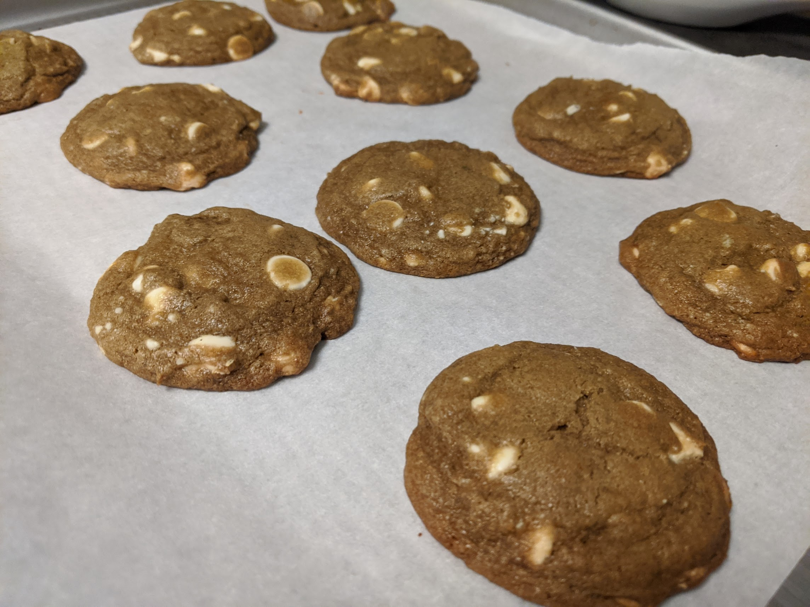

Matcha White Chocolate Chip Cookies!

This recipe makes quite a lot of cookies, ie 30+. Units are easily halved so make at your preference. I use these because it keeps units simple and I don't have leftover chocolate chips.
Ingredients:
- 1 cup (2 sticks) unsalted butter
- 2 large egg
- 2/3 cup white sugar
- 1 cup brown sugar
- 2 teaspoon vanilla extract
- 3 cup (372g) all-purpose flour
- 1 teaspoon baking soda
- 1 teaspoon salt
- 2 tablespoon matcha powder
- 1 bag of white chocolate chips
Directions:
Preheat oven to 350F
- With the ingredient gathered, start by mixing softened butter. An easy way to do this is by microwaving butter in 5 second increments until softened. Usually only takes 2-3 times.
- Mix butter and sugars together until well mixed and smooth.
- Add egg and vanilla extract and mix until well combined.
- In a seperate bowl, combine all dry ingredients. I advise to sift the matcha powder as it can clump easily and makes mixing harder.
- Slowly integrate dry ingredients with wet ingredients.
- Optional* - Cover and refrigerate for 2 hours to overnight.
- Scoop cookies into 2 tablespoon servings and place on tray at least 2 inches apart from each other
- Bake at 350F for 15 minutes, rotating tray halfway through.